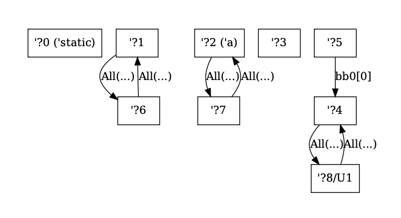
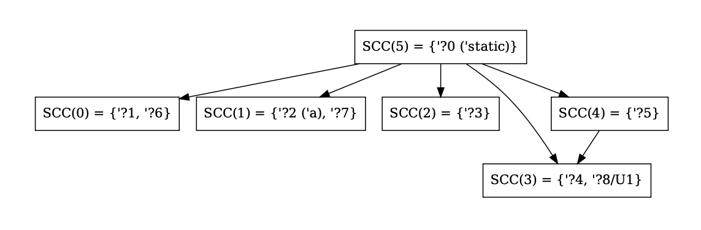

اشکالزدایی بررسیکنندهٔ قرض
گرافهای قید ناحیه و مؤلفههای قویاً همبند آنها

با -Z dump-mir-graphviz=yes، برای قیدهای outlives مربوط به bodyهای MIR که درخواست کردهاید، و همچنین برای مؤلفههای قویاً همبند (SCC) روی آنها، فایلهای Graphviz نیز دریافت میکنید.
این فایلها بهترتیب با نامهای mir_dump/rs-file-name.function-name.-------.nll.0.regioncx.all.dot و
mir_dump/rs-file-name.function-name.-------.nll.0.regioncx.scc.dot در دسترساند.
در هر دو گراف، متغیرهای ناحیهٔ نامدار با نام بیرونیشان (مانند 'static)
در داخل پرانتز نشان داده میشوند.
متغیرهای استنتاج ناحیه که در universeهایی غیر از universe ریشه قرار دارند،
بهصورت /U13 (برای universe شمارهٔ ۱۳) نمایش داده میشوند.
در گراف ناحیه،
یالها با مکانی در MIR برچسب میخورند که رابطه باید در آن برقرار باشد،
یا با All اگر قید باید همیشه برقرار باشد.

نکته: از 'static به هر ناحیهای یالهای ضمنی وجود دارد، اما این یالها برای جلوگیری از شلوغی
در گراف ناحیه رسم نمیشوند.
با این حال، آنها در گراف SCC نمایش داده میشوند.
به همین دلیل در گراف SCC از SCC(5) یالهای خروجیای وجود دارد که به نظر میرسد
در گراف outlives ناحیهها در بالا یال متناظری ندارند.
همچنین ببینید
دستورالعملهای عمومی اشکالزدایی جریان داده برای گرافهایی که از دادههای borrowcheck تولید میشوند نیز صادق است.